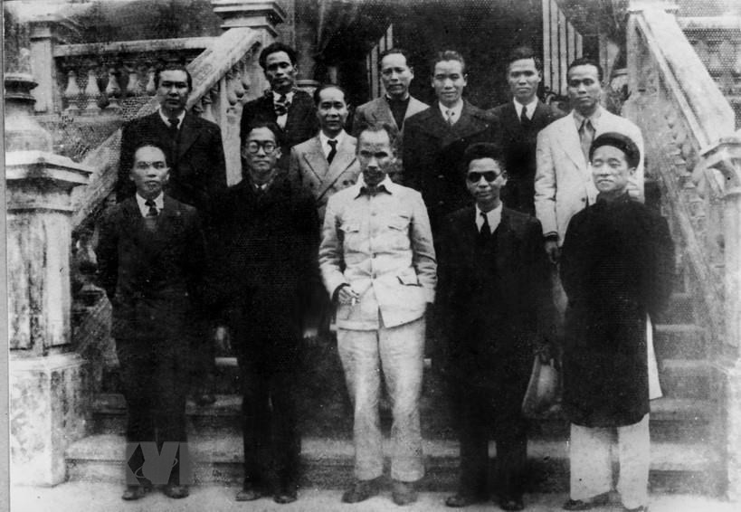
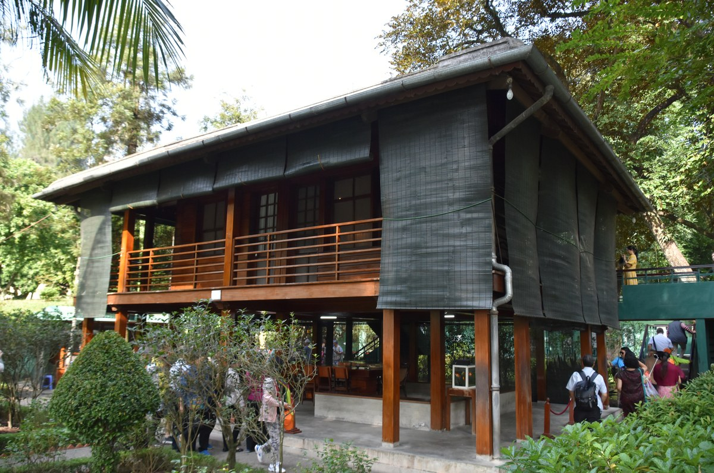

I. ĐẶT VẤN ĐỀ: VÌ SAO PHẢI BÀN VỀ "CHUẨN MỰC SỐNG ĐẸP" CỦA SINH VIÊN CÔNG NGHỆ?
Trong kỷ nguyên bùng nổ của chuyển đổi số, dữ liệu lớn và trí tuệ nhân tạo, trường đại học không chỉ là cái nôi sản sinh ra những kỹ sư lành nghề, mà còn là môi trường rèn giũa nhân cách của những công dân số tương lai. Tuy nhiên, một nghịch lý đang âm thầm hiện hữu trong một bộ phận giới trẻ: kết quả học tập có thể rất cao, kỹ năng công nghệ có thể rất nhạy bén, nhưng tư cách, tính kỷ luật, đạo đức nghề nghiệp và ý thức trách nhiệm cộng đồng đôi khi chưa theo kịp.
Áp lực của những kỳ thi, những kỳ hạn đồ án dồn dập, cùng sự cuốn hút vô tận của các nền tảng mạng xã hội dễ khiến sinh viên rơi vào lối sống thực dụng, "sống ảo", hoặc chạy theo thành tích ngắn hạn. Thậm chí trong giới lập trình, sự ỷ lại thái quá vào các công cụ AI tạo sinh (Generative AI) đang làm mai một đi sự kiên nhẫn tự học và tư duy chiều sâu. Trước bối cảnh ấy, một câu hỏi lớn mang tính quyết định được đặt ra: Học tập và làm theo Bác Hồ như thế nào để mỗi sinh viên Công nghệ Thông tin vừa giỏi chuyên môn, vừa sáng đạo đức nghề nghiệp, vừa hình thành được một "chuẩn mực sống đẹp" bền vững?

Bài viết này khẳng định: Học tập và làm theo tư tưởng, đạo đức, phong cách Hồ Chí Minh không phải là những bài học lý luận trừu tượng, mà chính là con đường thực tế, khả thi và giàu sức sống nhất giúp sinh viên xây dựng chuẩn mực sống đẹp từ những việc nhỏ bé thường ngày, từ đó hình thành các mô hình giải pháp hành động cụ thể cho tuổi trẻ Đại học Quốc gia TP.HCM.
II. TỪ NHỮNG BÀI HỌC GIẢN DỊ CỦA BÁC ĐẾN TRÁCH NHIỆM SINH VIÊN HÔM NAY
1. Kỷ luật – Đúng hẹn: Xương sống của đạo đức nghề nghiệp và sự tiến bộ
Chủ tịch Hồ Chí Minh luôn xem việc đúng giờ và giữ kỷ luật là biểu hiện cao nhất của sự tôn trọng bản thân và tôn trọng người khác. Trong kháng chiến gian khổ, có lần Bác đến dự và nói chuyện tại một lớp chỉnh huấn cán bộ. Trời mưa to tầm tã, đường rừng lầy lội, suối dâng ngập, nhưng Bác vẫn đến lớp đúng giờ như đã hẹn. Quần Bác xắn quá đầu gối, chiếc áo mưa ướt sũng. Khi các học viên xúc động và áy náy vì đã để Bác vất vả, Bác ôn tồn bảo:
“Đã hẹn thì phải đến, đến cho đúng giờ. Thà mình chịu ướt còn hơn để cả lớp chờ uổng công. Thời gian quý báu lắm, quý từng phút của mình và phải quý từng phút của người khác!”

Câu chuyện giản dị ấy để lại bài học thấm thía: Kỷ luật chính là danh dự. Đối với sinh viên Đại học Công nghệ Thông tin (UIT), tinh thần kỷ luật của Bác soi chiếu trực tiếp vào từng buổi lên lớp: vào giảng đường sớm 5 phút, lắng nghe trọn vẹn bài giảng, nộp bài tập lớn và đồ án phần mềm trước hạn chót (deadline). Khi làm việc nhóm (teamwork), mỗi thành viên giữ trọn lời hứa về tiến độ chính là giữ gìn niềm tin và tôn trọng công sức của đồng đội.
Hơn thế nữa, trong ngành công nghệ phần mềm, kỷ luật còn là kỷ luật công nghệ: tuân thủ nghiêm ngặt chuẩn mực bảo mật, viết mã nguồn sạch (Clean Code), tôn trọng quyền riêng tư của người dùng, không bao giờ vì lợi ích trước mắt mà phát tán phần mềm độc hại hay đạo văn công nghệ. Đó chính là việc làm theo Bác từ cái gốc của sự trung thực.
2. Giản dị – Tiết kiệm: Cái đẹp nằm ở sự vừa đủ, chống lãng phí tài nguyên
Suốt cuộc đời bôn ba cứu nước và trên cương vị lãnh tụ tối cao, Bác Hồ luôn giữ một phong cách sống giản dị đến mức thanh bạch: chiếc áo kaki đã sờn vai, đôi dép cao su đi khắp mọi nẻo đường kháng chiến, bữa ăn thanh đạm đĩa rau muống, con cá kho. Nhưng trong sự giản dị ấy là một triết lý sâu sắc: “Cái đẹp nằm ở sự vừa đủ, không ở sự cầu kỳ, hào nhoáng bên ngoài.”

Học Bác đức tính tiết kiệm trong giảng đường hôm nay, sinh viên UIT bắt đầu từ những hành vi văn minh: mang theo bình nước cá nhân, tắt đèn và máy lạnh khi rời phòng học, in tài liệu hai mặt, giữ gìn tài sản chung của nhà trường.
Trong tư duy công nghệ, tiết kiệm ngày nay còn mang một chiều kích mới: Điện toán xanh (Green Computing). Đó là ý thức tối ưu hóa thuật toán để tiết kiệm tài nguyên vi xử lý (CPU/GPU), giảm tiêu thụ điện năng tại các trung tâm dữ liệu, và quản trị thời gian số (Digital Well-being) – không lãng phí hàng giờ đồng hồ vào những nội dung độc hại, vô bổ trên mạng xã hội, mà dành năng lượng đó cho việc rèn luyện thể lực và trau dồi tri thức.
3. Tinh thần Tự học suốt đời: Chìa khóa vàng của người kỹ sư thời đại mới
Chủ tịch Hồ Chí Minh là hiện thân vĩ đại của tinh thần tự học. Ra đi tìm đường cứu nước với hai bàn tay trắng, Người đã tự học tiếng Pháp, tiếng Anh, tiếng Nga, tiếng Trung... thông qua lao động thực tiễn: viết từ vựng lên cánh tay để vừa làm phụ bếp vừa nhẩm đọc, buổi tối viết bài gửi cho các tờ báo tiến bộ ở Paris. Người từng căn dặn cán bộ, đảng viên và tuổi trẻ:
“Học hỏi là một việc phải tiếp tục suốt đời. Suốt đời phải học tập, không ai có thể tự cho mình là biết đủ rồi. Người không học tập thì như đi lùi, sẽ bị thời đại bỏ lại phía sau!”
Lĩnh vực Công nghệ Thông tin là một trong những ngành có tốc độ thay đổi nhanh nhất trong lịch sử nhân loại. Những kiến thức hôm nay học được có thể bị lỗi thời chỉ sau vài năm nếu bản thân dừng bước. Tinh thần tự học theo gương Bác chính là động lực thôi thúc mỗi sinh viên UIT chủ động đọc tài liệu kỹ thuật gốc, nghiên cứu mã nguồn mở, không giấu dốt, sẵn sàng làm chủ những công nghệ lõi như AI, Blockchain, Cloud Computing và An toàn thông tin. Tự học không phải là đơn độc một mình, mà là học từ thầy cô, học từ bạn bè và học từ chính những thất bại khi kiểm thử phần mềm.
4. Phụng sự cộng đồng: "Học để làm việc, làm người, giúp dân, giúp nước"
Trong một buổi Bác đến thăm lớp học Bình dân học vụ sau ngày Cách mạng Tháng Tám thành công, Bác ân cần hỏi một học viên: “Các cháu học để làm gì?” Người học viên thưa: “Thưa Bác, học để biết chữ ạ.” Bác mỉm cười, gật đầu rồi căn dặn:
“Học để biết chữ là đúng, nhưng cái quan trọng hơn là học để làm việc, để giúp dân, giúp nước, chứ không phải học để làm quan!”

Lời dạy ấy nhắc nhở sinh viên UIT rằng: mục đích tối hậu của việc học không chỉ dừng lại ở một tấm bằng loại giỏi hay một mức thu nhập cao cho riêng mình. Tri thức chỉ thực sự trọn vẹn khi nó trở thành giá trị phụng sự nhân dân và Tổ quốc. Một dòng code viết ra có thể giúp một người khuyết tật sử dụng máy tính dễ dàng hơn; một ứng dụng di động có thể giúp bà con nông dân kết nối tiêu thụ nông sản; một hệ thống tự động hóa có thể giúp bệnh viện phục vụ người bệnh kịp thời. Đó chính là cách sinh viên công nghệ cụ thể hóa lòng yêu nước và đạo đức phụng sự của Bác trong thế kỷ 21.
III. Ý TƯỞNG & MÔ HÌNH GIẢI PHÁP: "HỆ SINH THÁI 3 TỰ - 3 TIÊN PHONG" DÀNH CHO SINH VIÊN UIT
Từ những trăn trở và bài học thực tiễn, tác giả Bùi Huỳnh Tây đề xuất mô hình giải pháp hành động và sản phẩm truyền thông mang tên: "MÔ HÌNH 3 TỰ - 3 TIÊN PHONG" – một khung định hướng rèn luyện toàn diện, gắn chặt việc học tập tư tưởng Hồ Chí Minh với đặc thù của sinh viên khối ngành Công nghệ Thông tin tại Đại học Quốc gia TP.HCM.
SƠ ĐỒ MÔ HÌNH HÀNH ĐỘNG "3 TỰ - 3 TIÊN PHONG"
Khung giải pháp rèn luyện tư tưởng, đạo đức, phong cách Hồ Chí Minh - Tác giả: Bùi Huỳnh Tây
🎯 TRỤ CỘT "3 TỰ" (RÈN MÌNH - NỘI LỰC)
1. Tự học suốt đời: Chủ động cập nhật tri thức mới, nghiên cứu tài liệu quốc tế, không phụ thuộc vào mã nguồn có sẵn, rèn luyện tư duy phản biện khoa học.
2. Tự rèn kỷ luật: Thực hiện văn hóa đúng giờ (on-time), giữ gìn lối sống giản dị, tiết kiệm, liêm chính trong học thuật (nói không với gian lận đồ án).
3. Tự soi & Tự sửa: Định kỳ tự đánh giá điểm mạnh - điểm yếu của bản thân mỗi tuần, lắng nghe đóng góp của thầy cô và bạn bè để hoàn thiện đạo đức lối sống.
🚀 TRỤ CỘT "3 TIÊN PHONG" (PHỤNG SỰ - NGOẠI LỰC)
I. Tiên phong chuyển đổi số: Tham gia các đội hình chuyên "Mùa hè xanh", "Xuân tình nguyện" phổ cập kỹ năng số, hỗ trợ người dân vùng xa sử dụng dịch vụ công trực tuyến.
II. Tiên phong sáng tạo vì cộng đồng: Lập trình các sản phẩm mã nguồn mở phi lợi nhuận (Open Source for Social Good), ứng dụng AI giải quyết bài toán giao thông, y tế, giáo dục.
III. Tiên phong văn hóa mạng: Giữ gìn chuẩn mực ứng xử văn minh trên không gian mạng, tích cực lan tỏa thông tin tích cực, bảo vệ lẽ phải và nền tảng tư tưởng của Đảng.
Sản phẩm truyền thông & Ứng dụng số hóa đồng hành:

- 1. Web App "Nhật ký làm theo Bác 4.0": Một ứng dụng web nhỏ gọn do chính sinh viên UIT phát triển, cho phép sinh viên ghi nhận nhật ký rèn luyện "Mỗi ngày một việc tốt theo lời Bác", tích hợp thuật toán AI gợi ý các trích dẫn và câu chuyện lịch sử của Bác phù hợp với từng tâm trạng và thử thách học tập của sinh viên.
- 2. Chiến dịch "Code for Community - Lập trình phụng sự": Mạng lưới sinh viên công nghệ nhận bảo trợ kỹ thuật miễn phí cho các trung tâm bảo trợ xã hội, mái ấm nhà mở, xây dựng website quảng bá sản phẩm OCOP cho các địa phương khó khăn.
- 3. Không gian Văn hóa Hồ Chí Minh thực tế ảo (VR/AR UIT): Ứng dụng công nghệ 3D số hóa các hiện vật, hình ảnh về Bác Hồ và phòng truyền thống Đoàn - Hội, giúp sinh viên có thể tham quan, trải nghiệm không gian văn hóa Bác Hồ ngay trên điện thoại thông minh.
IV. THÔNG ĐIỆP KẾT LUẬN TỪ TÁC GIẢ BÙI HUỲNH TÂY
Học tập và làm theo Bác Hồ không bắt đầu từ những điều to lớn, vĩ đại, mà bắt đầu từ chính ngày hôm nay, từ chiếc bàn học ngăn nắp, từ một buổi lên lớp đúng giờ, từ một dòng code được viết bằng cả lương tâm nghề nghiệp và sự tôn trọng người dùng. Khi mỗi sinh viên biết nuôi dưỡng một lý tưởng sống đẹp, biết đặt lợi ích của tập thể lên trên sự ích kỷ cá nhân, chúng ta đang từng bước tiếp nối di nguyện của Bác: đưa non sông Việt Nam bước tới đài vinh quang để sánh vai cùng các cường quốc năm châu.
Là sinh viên của Trường Đại học Công nghệ Thông tin – ĐHQG-HCM, chúng mình tin tưởng sâu sắc rằng: Công nghệ sẽ chỉ thực sự có sức mạnh trọn vẹn khi nó được dẫn dắt bởi một trái tim ấm nóng tình người và một đạo đức trong sáng theo gương Bác Hồ kính yêu.
💬 Thảo luận & Bình luận đóng góp (4)